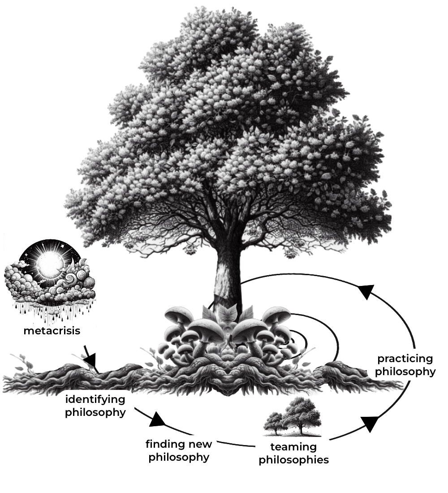

WHAT'S A philosophyGYM?

A philosophyGYM is a transformative learning process that starts by acknowledging the circumstances: the metacrisis - and continues with identifying existing philosophy and finding a new one; followed by teaming diverse philosophies and ends by actually practicing philosophy, before it starts all over again in a slightly new version.
A PhilosophyGym is a transformative learning process that starts by acknowledging the circumstances: the metacrisis - and continues with identifying existing philosophy and finding a new one; followed by teaming diverse philosophies and ends by actually practicing philosophy, before it starts all over again in a slightly new version.
rewilding philosophy is a reader-supported publication. To receive new posts and support my work, consider becoming a free or paid subscriber.
Transformative learning, as coined by educator Jack Mezirow, refers to the process through which individuals undergo a profound shift in perspective, beliefs, and values, leading to fundamental changes in their understanding of themselves and the world around them. Mezirow’s process includes the following:
- Disorienting Dilemma: A challenging experience prompts individuals to question their existing beliefs.
- Self-Examination: Individuals critically reflect on their beliefs, values, and assumptions.
- Critical Assessment of Assumptions: Existing beliefs are examined and evaluated for validity and origin.
- Recognition of Others‘ Perspectives: Individuals become open to considering alternative viewpoints and experiences.
- Exploration of New Roles and Relationships: New experiences and relationships are sought out to expand understanding.
- Planning for Action: Plans are developed to apply new insights to personal and social change.
In a research project on transformative learning journeys in which the goal was for participants to develop a more relational philosophy, the greatest challenge is and has always been the action part or lack thereof. In Mezirow’s model, he stops right before resurfacing at “planning for action”. The actual action is missing. However, it’s sometimes easier to act your way into a new way of thinking than to think your way into a new way of acting. Ideally, philosophy-gyms are for workouts – and that involves actually doing something.
But let’s unpack the whole process a little. To do that, we will build on the analogy of an ecosystem with mycelium (aka philosophy) in the heart and center.
ENVIRONMENT
Everything starts somewhere, and although the metacrisis is the result of 10.000 things, the metacrisis — climate change, social inequalities, resource scarcity, species extinction, ocean acidification, escalating depression rates, unpredictable technologies, and post-truth rivalries, contributing to an increasing societal divide – is our starting point. (In Buddhist teachings, the number 10,000 symbolizes the multiplicity or abundance of phenomena in the world. It represents the countless beings, events, thoughts, and experiences that populate existence.)
The metacrisis, though, is not an obstacle that we need to overcome but rather a circumstance that we need to adapt to. Just like a tree is subject to rain, sun and storms, as well as naturecultrual sources such as smog and fertilisers, the metacrisis is a system-crossing phenomenon – a political, social and ecological climate-change – that we are subject to.
Tree
The tree here symbolizes what we see on the surface: it’s us and our actions, the infrastructures we designed, our habits and customs, and our political and economic systems. All the phenomena that we can observe with our senses. Although the visible part of the tree is commonly what we pay attention to with its majestic trunk, sprawling branches, and vibrant foliage, it is the hidden rooting system beneath the soil that provides the essential foundation and support for the tree’s growth, nourishment, and resilience.
What informs how the tree is growing and whether it’s thriving or not depends as much on the roots of the tree as on its environment, such as the soil, storms, sun, wind, and rain. After all, the common saying is „to tackle the problem at its roots,“ meaning that often enough, the real cause of things is hidden, not visible. Usually, common sayings are rooted in deep embodied collective wisdom.
Roots
The roots symbolize our collective and individual inner lives. The philosopher and integral theorist Ken Wilber defines the collective inner as the shared or collective aspects of consciousness that are common to groups, cultures, or societies. It encompasses the collective beliefs, values, norms, symbols, myths, and worldviews that shape the shared identity and experience of a community or society. These collective inner dimensions of consciousness are often expressed through cultural practices, rituals, traditions, and institutions.
The individual inner refers to the subjective, psychological, and spiritual dimensions of consciousness experienced by individuals. It encompasses the thoughts, emotions, perceptions, beliefs, intentions, and spiritual experiences that constitute an individual’s inner life.
Just like roots nourish and inform the tree, our collective and individual inner lives nourish and inform how we behave and what we create in the world. And as roots anchor the tree in the world, our inner lives anchor us when our outer part is subjected to circumstantial turmoil, helping us to show up even when the rain is heavy.
Mycelium
What roots the roots and makes it possible for the tree to connect to trees and other lifeforms is the mycelium.
Mycelium is the underground network of fungal threads that connects the roots of trees and forms a vast communication network, sometimes referred to as the „wood wide web.“ The mycelium is not assigned to a single tree but rather „infiltrates“ large parts of the forest. Through this entanglement, mycelium enables trees to share information, such as distress signals, in response to environmental threats and to exchange nutrients, water, and chemical compounds with neighboring trees. This process, known as mycorrhizal symbiosis, is mutually beneficial, as trees provide sugars and carbohydrates to the fungi in exchange for essential minerals and water absorbed by the mycelium. And lastly, the mycelium is an adaptive system that continually adapts to changing conditions in order to be successful in different environments.
Philosophy is the mycelium of our times.
„A philosophic outlook is the very foundation of thought and of life. The sort of ideas we attend to and the sort of ideas that we push into the negligible background govern our hopes, our fears, and our control of behavior. As we think, we live. This is why the assemblage of philosophic ideas is more than a special study. It molds our type of civilization. „Alfred North Whitehead.
Just as mycelium forms a network that facilitates communication, nutrient exchange, and mutual support among trees and other life forms in forest ecosystems, philosophy serves as the underlying narrative that connects and sustains our lives and helps us adapt to the ever-changing nature of the world around us.
Just as mycelium „infiltrates“ large parts of the forest, invisible on the surface, philosophies are often woven unconsciously into our habits and customs.
Just as mycelium demonstrates remarkable adaptability, philosophy can serve as an adaptive system of knowing, being, and acting that continuously evolves and adjusts to changing intellectual, cultural, and societal conditions in order to remain relevant and effective in different contexts.
The mycelium represents the heart of the philosophy-gym.
Most often, the philosophies we live by remain unconscious, adopted from our environment and upbringing. In the WEIRD world (Western, Educated, Industrialized, Rich, and Democratic), mechanistic ideas dominate, characterized by rationalism, reductionism, empiricism, dualism, and determinism, and this greatly influences how we address sustainability challenges. So, the initial step within the mycelium is becoming aware of our philosophical status-quo.
The second step within the mycelium then involves identifying better philosophies—better suited for engaging with the current reality. Relational philosophies acknowledge the fundamental interconnectedness and entanglement of the world and outperform mechanistic ones in addressing the metacrisis. They align more closely with the latest scientific insights and advocate for extending care and compassion to the whole.
Some might argue that there are no inherently better or worse philosophies. We disagree. While we think (with Ken Wilber) that there is value in all of the philosophies that we have relied on – also in mechanistic philosophies – we believe that there is progress and development in philosophies. If we didn’t believe that, then we’d also have to accept that life is completely arbitrary and without direction, everything would be equally good and bad, and we’d get lost in relativizing.
„For more than a hundred years, researchers have studied the ways the human being constructs reality and have observed how that constructing can become more expansive, less distorted, less egocentric, and less reactive over time. When evolution occurs from one level of complexity to another, adults take greater responsibility for their thinking and feeling, can retain more levels of information, and can think further into the future, to name only some of the well-researched consequences of mental development.“ Robert Kegan and Lisa Lahey, 2016
Like mycorrhizal symbiosis, philosophies can connect us to others while maintaining diversity. Instead of being in competition, philosophies can bring us into dialogue that evolves into cooperation, forming a functioning economy of mutual exchange in which we learn something from each other’s philosophy. A lack of a joint philosophy, though, increases the divide, leaving each member of the ecosystem unconnected.
The third step within the mycelium is, therefore, to „team philosophies.“ Rather than operating within isolated intellectual silos, individuals can learn to team up their philosophies. This involves recognizing and embracing the diversity of unique perspectives. While the mycelium forms its own network with distinct properties, it also simultaneously supports the individual tree, providing it with the necessary nutrients and resources to flourish. Teaming philosophies is about acknowledging that other people have other philosophies that they live by, trying to empathize with their philosophies, and figuring out how to relate to each other despite these differences, something that seems to have become more important than ever.
rewilding philosophy is a reader-supported publication. To receive new posts and support my work, consider becoming a free or paid subscriber.
Mushrooms
Mushrooms are the fruiting bodies of mycelium. When conditions are suitable, mycelium may produce reproductive structures, which are what we typically recognize as mushrooms. Fruiting bodies are the visible, above-ground structures that emerge from the mycelium and serve as the means for the fungus to reproduce.
When philosophies are practiced in everyday life, they come to the surface, not only in the form of a tree – informing how we are and what we create – but as their own entity – a new narrative that wants to spread by dispersing its spores.
The last step, therefore, is to actually practice living those philosophies, to exit the metaphysical meadow below the surface back into the real world. And this includes practicing on a daily basis.
And that’s why philosophy-gyms are called philosophy-gyms. It is through life in forms of practice that things actually change. As Peter Sloterdijk says
„Practice is defined here as any operation that provides or improves the actor’s qualification for the next performance of the same operation, whether it is declared as practice or not.“
He also says, and we agree, that
„It is time to reveal humans as the beings who result from repetition. Just as the nineteenth century stood cognitively under the sign of production and the twentieth under that of reflexivity, the future should present itself under the sign of the exercise.“
Exercising one’s philosophy, that is.
Spores
Spores can indirectly impact climate processes through their roles in ecosystem functioning and biogeochemical cycles. For example, when mushrooms release spores, they can contribute to the production of aerosols in the atmosphere. Aerosols are tiny particles suspended in the air, and they can play a role in cloud formation and precipitation processes. Spores released by mushrooms can act as cloud condensation nuclei, around which water vapor can condense to form clouds. This process can potentially influence local weather patterns by affecting cloud dynamics and precipitation.
Just like spores, when philosophies surface (when they are practiced), they influence the climate and create a new climate, a new circumstance that we need to adapt to – a „new metacrisis“ so to say. And this is where the loop almost closes. Except, it doesn’t, as the „new metacrisis“ is an evolved and changed version of what came before.
How we live and practice our philosophy impacts global challenges, both on personal and systemic levels. This new way of living, though, will likely create new problems, better problems.
While mechanistic philosophies played a pivotal role in innovations like the internet and comfortable housing, they also led to environmental degradation and avarice. The aim now is to integrate the advantages of mechanistic philosophies while transitioning into relational philosophies. The aim of the future will be to integrate the advantages of relational philosophies while transitioning into whatever emerging philosophies. The trajectory of improvement in philosophies, influencing how we design our lives, infrastructures, or cultures, has no halt. It’s always open to new possibilities and continuous improvement.
“True philosophy entails learning to see the world anew.” Maurice Merleau-Ponty
Or as John Stokdijk recently said
“Certainty about the truth is mostly a red flag. Very few people seem to understand that knowing truth can be a prison, …”
Likewise, I don’t think a relational philosophy is “the truth.” I also think relational philosophies are very different for every person. Some might lean towards posthumanism, like Anthony Miccoli , and others, like Nathan Dufour Oglesby, more towards ecosophy (not that these two are exclusive).
To respond to the metacrisis, we need to learn exactly that: to see the world anew. PhilosophyGym are designed to do this, following the principles of an ecosystem. Practicing philosophy is a relational process. It’s mycelium-ing.